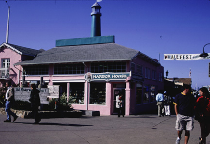

Entrance to Fisherman's Wharf. As you continue walking along the path from the parking lot, you eventually reach the entrance to the wharf. To the left is the wharf sign and if you keep walking ahead you will reach the shops and restaurants that, besides the marine animals, are the very life of the wharf. The photograph was originally produced with late afternoon sun and a 35 mm camera using Provia slide film, shutter speed 125, F11. Photo copyright Andrea L. Arredondo, May 11, 2000.
Updated by Andrea Arredondo
5/19/00